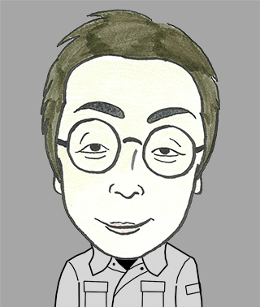
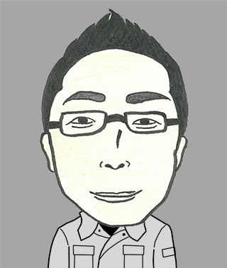
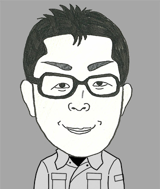
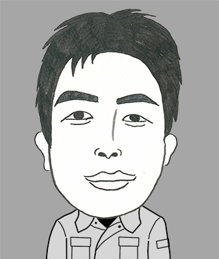
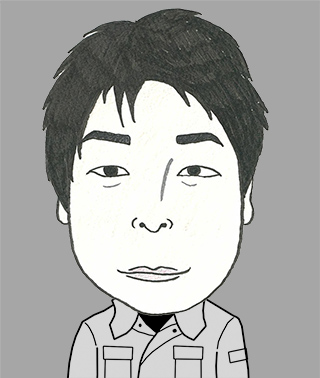
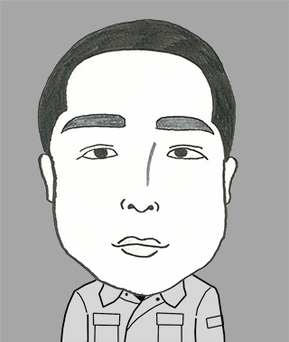
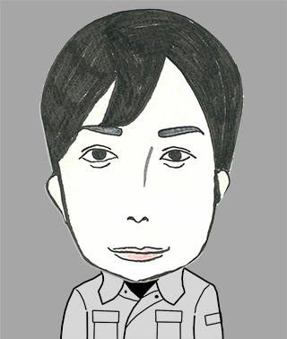
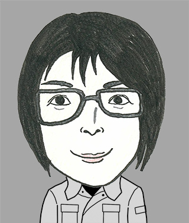
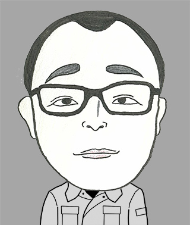
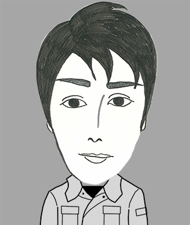

スタッフ紹介

simojima.k
下嶋
好きなもの：釣り、アウトドア
自然の中で過ごす時間が最高のリフレッシュです。現場作業も楽しんでいます。

teraoka.k
寺岡
好きなもの：ゴルフ、読書
技術の進化に常にアンテナを張り、チーム全体のレベルアップを目指しています。

shirakawa.t
白川
好きなもの：サッカー観戦、カフェ巡り
丁寧な仕事を心がけ、お客様に信頼される技術者を目指しています。

nishi.m
西
好きなもの：映画鑑賞、旅行
様々な現場を経験することで、日々成長を実感しています。

tani.m
谷
好きなもの：料理、音楽
チームワークを大切に、一つひとつの業務に真摯に取り組んでいます。

nakamura.s
中村
好きなもの：ランニング、温泉
健康第一！体力が資本の仕事なので、日頃から運動を欠かしません。

ishimaru.y
石丸
好きなもの：ゲーム、ドライブ
新しい技術を学ぶのが好きで、常に向上心を持って仕事に取り組んでいます。

matsumura.m
松村
好きなもの：キャンプ、写真撮影
現場での写真撮影が得意です。記録も大事な仕事の一つです。

morita.j
森田
好きなもの：野球、BBQ
先輩方に支えられながら、少しずつ一人前の技術者に近づいています。

yamamoto.t
山本
好きなもの：サイクリング、読書
インフラを守る仕事に誇りを持ち、日々精進しています。